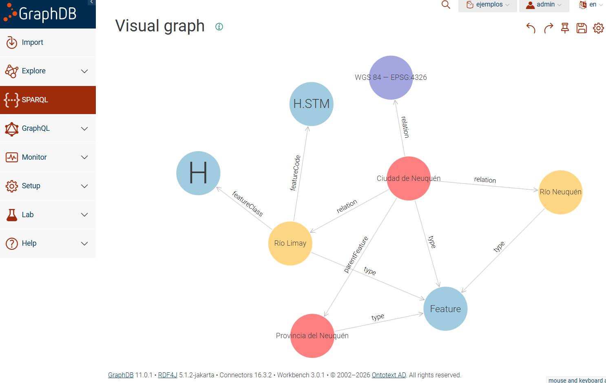

13. Ontologías: fundamentos y aplicaciones en las geociencias#
Material introductorio para estudiantes y profesionales de las geociencias
Nivel: inicial–intermedio
Propósito: comprender qué es una ontología, cómo representa conocimiento y qué problemas ayuda a resolver en el ámbito geoespacial.
13.1. Objetivos de aprendizaje#
Al finalizar la lectura, se espera que el lector pueda:
Distinguir una ontología de una base de datos, una taxonomía y un vocabulario controlado.
Reconocer clases, individuos, propiedades, axiomas e identificadores IRI.
Interpretar tripletas RDF y ejemplos sencillos en Turtle y SPARQL.
Explicar la utilidad de las ontologías para integrar fuentes geográficas heterogéneas.
Identificar posibilidades y límites del razonamiento semántico y de su combinación con IA.
13.2. 1. El problema: muchos datos, distintos significados#
Imaginemos tres organismos que publican información sobre un río. Una autoridad hídrica registra su nombre, caudal y cuenca; un municipio lo representa como una línea en un servicio de entidades geográficas; y una oficina ambiental publica áreas de protección asociadas. Los tres conjuntos de datos pueden referirse al mismo río, pero utilizar nombres de campos, identificadores, unidades y criterios distintos.
La interoperabilidad técnica permite acceder e intercambiar datos. Sin embargo, poder intercambiar datos no garantiza que los sistemas interpreten su significado de la misma manera. Por ejemplo, curso_agua, watercourse y rio podrían designar conceptos equivalentes, relacionados o parcialmente diferentes, según cómo se definan.
Las ontologías ayudan a explicitar esos significados y relaciones. También permiten formular preguntas que atraviesan diferentes fuentes: «¿Qué ciudades están próximas a ríos que pertenecen a determinada cuenca?» o «¿Qué áreas protegidas se vinculan con cursos de agua de una provincia?».
13.3. 2. ¿Qué es una ontología?#
En informática y representación del conocimiento, una ontología es una especificación explícita y formal de una conceptualización compartida de un dominio. Esta formulación, inspirada en la definición de Gruber y en la literatura de ingeniería ontológica [Gruber, 1993, Noy and McGuinness, 2001], reúne cuatro ideas:
Conceptualización: se identifican entidades y relaciones relevantes de un ámbito, por ejemplo ríos, cuencas, provincias y ciudades.
Explícita: los conceptos y sus relaciones se definen y documentan, en vez de quedar implícitos en el conocimiento de una persona.
Formal: se emplean lenguajes interpretables por máquinas, como RDFS u OWL.
Compartida: se procura establecer un significado consensuado y reutilizable, aunque siempre puede haber distintas ontologías para un mismo dominio.
Una ontología no es el territorio ni una copia completa de la realidad. Es un modelo que selecciona ciertos aspectos de un dominio para responder preguntas y realizar tareas concretas. Su calidad depende, entre otras cosas, de la claridad de sus definiciones, su coherencia, su adecuación a los usos previstos y su mantenimiento [Noy and McGuinness, 2001].
13.3.1. Ejemplo intuitivo#
Una descripción informal podría afirmar:
«El río Limay es un río relacionado con la provincia del Neuquén».
Un modelo semántico permite separar los elementos de esa afirmación:
Concepto o clase:
Río.Individuo:
Río Limay.Relación:
atraviesaolimitaCon, según la afirmación geográfica precisa que se quiera modelar.Otro individuo:
Provincia del Neuquén.
La elección de la relación importa: «atraviesa», «limita con» y «está cerca de» no significan lo mismo. Una ontología obliga a aclarar esas diferencias.
13.4. 3. Los componentes de una ontología#
13.4.1. 3.1 Clases#
Una clase agrupa entidades que comparten una caracterización conceptual. Ejemplos: Río, Lago, CuencaHidrográfica, Ciudad, Provincia, ParcelaCatastral.
Una jerarquía posible sería:
EntidadGeográfica
├── ElementoHidrográfico
│ ├── Río
│ └── Lago
└── UnidadAdministrativa
├── Provincia
└── Municipio
Este árbol es solo una representación didáctica: una ontología real puede tener múltiples jerarquías y relaciones que no se reducen a un árbol.
13.4.2. 3.2 Individuos o instancias#
Un individuo es una entidad particular representada en el modelo: el río Limay, la ciudad de Neuquén o una parcela con identificador determinado. La clase Río no es un río particular: describe el tipo de entidad al que puede pertenecer el individuo RioLimay.
13.4.3. 3.3 Propiedades y relaciones#
Las propiedades de objeto relacionan individuos entre sí: desembocaEn, perteneceACuenca, limitaCon, seUbicaEn.
Las propiedades de datos vinculan individuos con valores literales: nombre, superficieKm2, codigoCatastral.
Ejemplos:
RioLimay --perteneceACuenca--> CuencaDelRioNegro
RioLimay --nombre--> "Limay"
La primera relación conecta dos recursos; la segunda conecta un recurso con un texto.
13.4.4. 3.4 Axiomas y restricciones#
Los axiomas expresan afirmaciones formales que permiten derivar consecuencias. Por ejemplo:
Ríoes una subclase deElementoHidrográfico.desembocaEnrelaciona cursos de agua con cuerpos de agua, si esa es la definición adoptada.esAfluenteDepuede definirse como una relación transitiva solo si su significado y el caso de uso justifican esa decisión.
También pueden declararse clases disjuntas, equivalencias, dominios, rangos y otras restricciones. Importante: en OWL, las restricciones no funcionan necesariamente como controles de validación de formularios. Para validar datos según condiciones cerradas suele utilizarse SHACL [W3C, 2012, W3C, 2017].
13.5. 4. Ontología, taxonomía, tesauro y base de datos#
Recurso |
Qué representa principalmente |
Ejemplo geográfico |
|---|---|---|
Taxonomía |
Clasificación jerárquica |
Río es un tipo de elemento hidrográfico |
Tesauro / SKOS |
Conceptos, etiquetas y relaciones terminológicas |
«Curso de agua» como término preferido y sus términos relacionados |
Ontología |
Conceptos, relaciones y axiomas formalizados |
Un río pertenece a una cuenca y desemboca en otro cuerpo de agua |
Base de datos |
Datos almacenados y operaciones para gestionarlos |
Tabla de ríos con nombre, código y geometría |
Grafo de conocimiento |
Entidades y relaciones representadas como grafo, frecuentemente apoyadas en ontologías |
Río Limay → pertenece a → Cuenca del río Negro |
Estas tecnologías se complementan. Una base de datos puede almacenar instancias; una ontología puede definir su significado; un grafo de conocimiento puede vincularlas; SKOS puede ayudar a armonizar términos de distintos catálogos [W3C, 2009].
13.6. 5. RDF: expresar conocimiento mediante tripletas#
RDF (Resource Description Framework) es un modelo estándar del W3C para representar afirmaciones como tripletas [W3C, 2014]:
Sujeto → Predicado → Objeto
Por ejemplo:
RioLimay → rdf:type → Rio
RioLimay → nombre → "Limay"
RioLimay → perteneceACuenca → CuencaDelRioNegro
Cada tripleta expresa una afirmación. Al conectar muchas tripletas se obtiene un grafo de recursos y relaciones.
13.6.1. ¿Qué es una IRI?#
Una IRI (Internationalized Resource Identifier) es un identificador que permite nombrar inequívocamente un recurso en el contexto de un sistema de identificación. Por ejemplo:
https://ejemplo.org/geo/ontologia#Rio
https://ejemplo.org/geo/recurso/RioLimay
https://ejemplo.org/geo/propiedad/perteneceACuenca
Estas direcciones son ilustrativas y no identifican un servicio publicado. En una ontología, clases, propiedades e individuos suelen tener IRI propias. Una IRI puede ser dereferenciable, es decir, diseñada para que una consulta web devuelva una descripción útil del recurso, por ejemplo HTML para personas o RDF para aplicaciones. No toda IRI tiene necesariamente una página web accesible, ni una IRI debe confundirse con la ubicación física de un objeto geográfico.
13.7. 6. RDFS, OWL, SKOS, SHACL y GeoSPARQL#
Estándar |
Función principal |
|---|---|
RDF |
Representar afirmaciones como tripletas |
RDFS |
Definir vocabularios básicos, clases, subclases y propiedades |
OWL |
Expresar axiomas y restricciones semánticas más elaboradas |
SKOS |
Representar sistemas de organización del conocimiento: tesauros, clasificaciones y vocabularios controlados |
SHACL |
Validar grafos RDF frente a formas y restricciones declaradas |
SPARQL |
Consultar y transformar datos RDF |
GeoSPARQL |
Representar y consultar información geoespacial en RDF, incluyendo geometrías y relaciones espaciales |
Una distinción útil: RDF es el modelo de datos; OWL es un lenguaje para definir ontologías; SPARQL es un lenguaje de consulta. No son tecnologías intercambiables [Open Geospatial Consortium, n.d., W3C, 2009, W3C, 2012, W3C, 2013, W3C, 2014, W3C, 2017].
13.8. 7. Nuestro caso de estudio: Neuquén y sus ríos#
A partir de aquí utilizaremos un único ejemplo conductor, referido a cinco recursos: la ciudad de Neuquén, la provincia del Neuquén, el río Limay, el río Neuquén y el sistema de referencia WGS 84 (EPSG:4326). El objetivo no es hacer un inventario geográfico exhaustivo, sino aprender a representar y consultar conocimiento.
Una persona puede leer la siguiente frase sin dificultad:
«La ciudad de Neuquén se encuentra en la provincia del Neuquén, está relacionada con los ríos Limay y Neuquén y tiene coordenadas geográficas».
Pero una computadora necesita identificadores estables, relaciones explícitas y vocabularios con significados documentados para procesar esa información sin depender solamente de interpretar una frase.
13.8.1. 7.1. El grafo conceptual#
El siguiente diagrama representa las principales relaciones expresadas en el Turtle del ejemplo de Neuquén. Se trata de una representación didáctica del grafo RDF, que permite reconocer las entidades geográficas, sus propiedades y las relaciones que las vinculan.
flowchart LR
C["Ciudad de Neuquén<br/>3843123"] -->|"gn:parentFeature"| P["Provincia del Neuquén<br/>3843122"]
C -->|"dcterms:relation"| L["Río Limay<br/>3846883"]
C -->|"dcterms:relation"| N["Río Neuquén<br/>3843121"]
C -->|"dcterms:relation"| S["WGS 84 / EPSG:4326"]
C -->|"wgs84:lat / wgs84:long"| V["Coordenadas decimales"]
L -->|"gn:featureClass"| HC["gn:H — elemento hidrográfico"]
N -->|"gn:featureClass"| HC
L -->|"gn:featureCode"| H["gn:H.STM — curso de agua"]
N -->|"gn:featureCode"| H
Cómo leer el diagrama. Los rectángulos representan recursos o valores relevantes y las flechas representan propiedades RDF. La ciudad de Neuquén se vincula con la provincia mediante gn:parentFeature, y con los ríos Limay, Neuquén y el sistema de referencia WGS 84 mediante dcterms:relation.
En este ejemplo, dcterms:relation expresa una relación genérica entre recursos. Por lo tanto, no debe interpretarse automáticamente como «limita con», «atraviesa» o «está cerca de». Para representar estas relaciones espaciales específicas sería necesario utilizar propiedades con significados más precisos.
Los ríos Limay y Neuquén se describen mediante dos niveles de clasificación del vocabulario GeoNames:
gn:featureClass gn:H: identifica la categoría general de los elementos hidrográficos (Hydrographic features), que incluye ríos, lagos, arroyos y otros cuerpos de agua.gn:featureCode gn:H.STM: identifica específicamente un curso de agua (stream), categoría utilizada para ríos y arroyos.
De esta manera, gn:H establece una clasificación general y gn:H.STM proporciona una caracterización más específica del tipo de entidad geográfica.
Además, el Turtle establece que la ciudad, la provincia y ambos ríos son instancias de gn:Feature, mientras que el sistema de referencia WGS 84 (EPSG:4326) se declara como instancia de ignf:GeodeticCRS.
13.8.1.1. Visualización del grafo en GraphDB#
El mismo conjunto de recursos y relaciones puede explorarse mediante GraphDB, una plataforma para almacenar, consultar y visualizar grafos RDF.
La siguiente figura presenta el resultado de una consulta SPARQL CONSTRUCT realizada sobre los recursos del ejemplo.


Fig. 13.1 Grafo de conocimiento de Neuquén visualizado en GraphDB, con las relaciones entre la ciudad, la provincia, los ríos y los conceptos utilizados para su clasificación.#
En esta visualización pueden identificarse:
Los recursos geográficos: ciudad de Neuquén, provincia del Neuquén, río Limay y río Neuquén.
Las clases y categorías:
gn:Feature,gn:Hygn:H.STM.El sistema de referencia: WGS 84, identificado mediante EPSG:4326.
Las relaciones semánticas:
rdf:type,gn:parentFeature,dcterms:relation,gn:featureClassygn:featureCode.
Una característica importante de la visualización de GraphDB es que representa principalmente relaciones entre recursos identificados mediante IRI. Los valores literales, como nombres, coordenadas o comentarios, pueden consultarse en las propiedades de cada recurso, aunque no necesariamente aparezcan como nodos del gráfico.
Por esta razón, el diagrama Mermaid y la visualización de GraphDB son complementarios. El primero ofrece una representación simplificada para facilitar el aprendizaje, mientras que el segundo permite explorar las conexiones entre los recursos almacenados en una base de conocimiento RDF.
Este ejemplo ilustra uno de los principios fundamentales de las tecnologías semánticas: los datos dejan de considerarse registros aislados y pasan a formar parte de una red de recursos identificables, relacionados mediante propiedades cuyo significado está definido por vocabularios y ontologías compartidos.
13.8.2. 7.2. El ejemplo completo en Turtle#
Se reproduce el ejemplo propuesto, respetando sus identificadores, coordenadas y relaciones. La sintaxis sigue la especificación Turtle del W3C [W3C, 2014]. Es un grafo didáctico que combina recursos de vocabularios conocidos con afirmaciones de datos; no debe interpretarse como una transcripción certificada e íntegra de los registros originales.
@prefix gn: <https://www.geonames.org/ontology#> .
@prefix dcterms: <http://purl.org/dc/terms/> .
@prefix wgs84: <http://www.w3.org/2003/01/geo/wgs84_pos#> .
@prefix ignf: <http://data.ign.fr/def/ignf#> .
@prefix rdfs: <http://www.w3.org/2000/01/rdf-schema#> .
@prefix xsd: <http://www.w3.org/2001/XMLSchema#> .
# 1. CIUDAD DE NEUQUÉN
<https://sws.geonames.org/3843123/>
a gn:Feature ;
gn:name "Neuquén" ;
gn:countryCode "AR" ;
gn:parentFeature <https://sws.geonames.org/3843122/> ;
wgs84:lat "-38.95078"^^xsd:decimal ;
wgs84:long "-68.05920"^^xsd:decimal ;
dcterms:relation
<https://sws.geonames.org/3846883/> ,
<https://sws.geonames.org/3843121/> ,
<https://epsg.io/4326> ;
rdfs:comment
"Los ríos Limay y Neuquén constituyen límites naturales de la ciudad."@es .
# 2. PROVINCIA DEL NEUQUÉN
<https://sws.geonames.org/3843122/>
a gn:Feature ;
gn:name "Provincia del Neuquén" ;
gn:countryCode "AR" .
# 3. RÍO LIMAY
<https://sws.geonames.org/3846883/>
a gn:Feature ;
gn:name "Río Limay" ;
gn:featureClass gn:H ;
gn:featureCode gn:H.STM ;
gn:countryCode "AR" .
# 4. RÍO NEUQUÉN
<https://sws.geonames.org/3843121/>
a gn:Feature ;
gn:name "Río Neuquén" ;
gn:featureClass gn:H ;
gn:featureCode gn:H.STM ;
gn:countryCode "AR" .
# 5. SISTEMA DE REFERENCIA WGS 84
<https://epsg.io/4326>
a ignf:GeodeticCRS ;
rdfs:label "WGS 84 — EPSG:4326"@es ;
dcterms:identifier "EPSG:4326" .
Qué significan los símbolos: @prefix declara abreviaturas de IRI; a es la abreviatura de rdf:type; ; conserva el sujeto; , permite varios objetos para el mismo predicado; . finaliza el conjunto de afirmaciones de un sujeto. Las cadenas entre comillas son literales, @es indica idioma español, y ^^xsd:decimal declara el tipo numérico decimal.
13.8.3. 7.3. Desarmar el ejemplo en tripletas RDF#
Una tripleta tiene la estructura sujeto → predicado → objeto. Por ejemplo:
Sujeto |
Predicado |
Objeto |
Qué expresa |
|---|---|---|---|
Ciudad de Neuquén |
|
|
La ciudad se describe como entidad geográfica GeoNames. |
Ciudad de Neuquén |
|
|
Su nombre es un literal textual. |
Ciudad de Neuquén |
|
Provincia del Neuquén |
Se declara una relación jerárquica con la provincia. |
Ciudad de Neuquén |
|
|
Tiene un valor de latitud. |
Ciudad de Neuquén |
|
Río Limay |
Se establece una relación genérica entre recursos. |
Río Limay |
|
|
Se categoriza como curso de agua según GeoNames. |
EPSG:4326 |
|
|
Se clasifica el recurso del CRS mediante el vocabulario IGNF. |
La distinción es decisiva: los sujetos y objetos que son recursos se identifican mediante IRI, mientras que nombres, comentarios y coordenadas son literales. Un literal como "Neuquén" no es la propia ciudad: es un valor que la describe.
13.8.4. 7.4. IRI completas, prefijos y dereferenciación#
Por ejemplo, gn:Feature abrevia la IRI https://www.geonames.org/ontology#Feature; gn:parentFeature abrevia https://www.geonames.org/ontology#parentFeature.
Para la ciudad utilizamos la IRI https://sws.geonames.org/3843123/. Para el río Limay, https://sws.geonames.org/3846883/. Los identificadores son distintos de sus etiquetas legibles: dos recursos pueden compartir nombre sin ser la misma entidad.
Una IRI dereferenciable permite intentar recuperar por HTTP una descripción del recurso. Según la configuración del servidor y la negociación de contenido, esa descripción puede ofrecerse en HTML, RDF u otros formatos. La IRI no equivale obligatoriamente a una página HTML ni garantiza que siempre responda [W3C, 2014].
13.8.5. 7.5. Qué ontologías y vocabularios reutilizamos#
Prefijo |
Procedencia o función |
Elementos usados |
|---|---|---|
|
Ontología de GeoNames, para entidades geográficas y su clasificación. |
|
|
Dublin Core Terms, vocabulario general de metadatos. |
|
|
Vocabulario WGS84 Geo Positioning, para coordenadas geográficas. |
|
|
Ontología de sistemas de referencia del IGN francés. |
|
|
RDF Schema, para etiquetas y comentarios, entre otras construcciones. |
|
|
Tipos de datos XML Schema. |
|
Observación sobre GeoNames: gn:H corresponde a la clase de accidentes hidrográficos y gn:H.STM a la categoría stream (curso de agua). La ontología de GeoNames es un vocabulario reutilizable [GeoNames, n.d.]; cada registro de la ciudad o del río es una instancia documentada con sus propiedades.
13.9. 8. ¿Dónde está la ontología y dónde están los datos?#
Este es uno de los puntos más importantes de la introducción. Escribir datos en Turtle no significa, por sí solo, haber definido una ontología nueva. Nuestro archivo representa principalmente un grafo de datos RDF construido con términos definidos en ontologías y vocabularios externos.
Nivel de vocabulario / ontología:
gn:Feature,gn:parentFeature,gn:featureCodeeignf:GeodeticCRStienen definiciones publicadas en sus respectivos vocabularios.Nivel de instancias: la ciudad y los dos ríos tienen IRI concretas, nombres, coordenadas y relaciones.
Nivel de axiomas: mediante RDFS u OWL se pueden declarar clases, subclases, dominios, rangos y relaciones con semántica formal que permitan algunas inferencias.
Por ejemplo, podemos extender el modelo de manera didáctica con términos propios. El siguiente fragmento es una propuesta adicional al grafo original, no forma parte de la ontología oficial de GeoNames:
@prefix ex: <https://ejemplo.org/ontologia/neuquen#> .
@prefix owl: <http://www.w3.org/2002/07/owl#> .
@prefix rdfs: <http://www.w3.org/2000/01/rdf-schema#> .
@prefix gn: <https://www.geonames.org/ontology#> .
ex:CursoDeAgua a owl:Class ;
rdfs:subClassOf gn:Feature ;
rdfs:label "Curso de agua"@es .
ex:Rio a owl:Class ;
rdfs:subClassOf ex:CursoDeAgua ;
rdfs:label "Río"@es .
<https://sws.geonames.org/3846883/> a ex:Rio .
<https://sws.geonames.org/3843121/> a ex:Rio .
Ahora sí existe una pequeña conceptualización formal adicional: ex:Rio es subclase de ex:CursoDeAgua, que a su vez es subclase de gn:Feature. El dominio ejemplo.org es ilustrativo, no corresponde a una ontología publicada. La distinción entre clases, instancias y axiomas sigue los principios de diseño de ontologías [Noy and McGuinness, 2001, W3C, 2014].
13.9.1. 8.1. Inferir, no solo recuperar#
Con las tripletas adicionales y un razonador que interprete rdfs:subClassOf, podemos concluir:
Río Limay → rdf:type → ex:Rio (declarado)
ex:Rio → rdfs:subClassOf → ex:CursoDeAgua (axioma)
------------------------------------------------------------
Río Limay → rdf:type → ex:CursoDeAgua (inferido)
En forma similar puede deducirse que el río Limay es un gn:Feature, aunque esa clasificación también aparezca explícita en el grafo inicial. Esto es razonamiento deductivo apoyado en la semántica de RDFS [W3C, 2014]; no depende de que un modelo de lenguaje adivine una relación.
Lo que no podemos inferir: que el río Limay delimita una porción determinada de la jurisdicción de Neuquén solamente porque exista dcterms:relation. Esa propiedad no expresa el tipo preciso de relación geográfica. El comentario humano sobre «límites naturales» es información textual, pero no crea automáticamente una relación formal limitaCon.
13.9.2. 8.2. Relaciones generales y específicas#
Para una consulta temática más rigurosa se podría agregar una propiedad específica, con una definición documentada y evidencia territorial que la respalde:
@prefix ex: <https://ejemplo.org/ontologia/neuquen#> .
@prefix owl: <http://www.w3.org/2002/07/owl#> .
@prefix rdfs: <http://www.w3.org/2000/01/rdf-schema#> .
ex:tieneLimiteNaturalCon a owl:ObjectProperty ;
rdfs:label "tiene límite natural con"@es ;
rdfs:comment "Relaciona una entidad territorial con un elemento natural que integra parte de su límite, según una fuente definida."@es .
<https://sws.geonames.org/3843123/>
ex:tieneLimiteNaturalCon <https://sws.geonames.org/3846883/> ,
<https://sws.geonames.org/3843121/> .
Estas últimas dos afirmaciones son datos adicionales propuestos para fines didácticos y deben revisarse frente a las fuentes cartográficas y la definición exacta de «ciudad», «ejido» o jurisdicción. Definir una propiedad no basta para demostrar que su utilización en un caso es verdadera.
13.9.3. 8.3. Un detalle geodésico importante#
En el archivo original se usa dcterms:relation para conectar la ciudad con https://epsg.io/4326. Esa relación genérica no equivale a una declaración formal de que las coordenadas wgs84:lat y wgs84:long están expresadas en EPSG:4326. Aunque estas propiedades se basan en WGS84, para documentar sistemas de referencia con rigor conviene emplear propiedades o representaciones espaciales apropiadas, como geometrías GeoSPARQL con IRI de CRS explícita.
Además, debe diferenciarse el sistema EPSG:4326, cuyo orden de ejes según EPSG es latitud-longitud, de OGC:CRS84, utilizado habitualmente con longitud-latitud en WKT. No debe intercambiarse el orden sin examinar el formato y el CRS.
13.10. 9. Consultar el caso Neuquén mediante SPARQL#
Las consultas se basan en SPARQL 1.1 [W3C, 2013].
SPARQL sirve para convertir las preguntas de los estudiantes en patrones de tripletas. Las siguientes consultas están escritas para el grafo original de la sección 7. No requieren incorporar la extensión opcional de la sección 8.
13.10.1. Consulta 1. ¿Qué nombre y coordenadas tiene la ciudad?#
PREFIX gn: <https://www.geonames.org/ontology#>
PREFIX wgs84: <http://www.w3.org/2003/01/geo/wgs84_pos#>
SELECT ?nombre ?latitud ?longitud
WHERE {
<https://sws.geonames.org/3843123/>
gn:name ?nombre ;
wgs84:lat ?latitud ;
wgs84:long ?longitud .
}
Resultado esperado: Neuquén, -38.95078, -68.05920.
13.10.2. Consulta 2. ¿Cuál es la entidad administrativa superior vinculada a la ciudad?#
PREFIX gn: <https://www.geonames.org/ontology#>
SELECT ?provincia ?nombre
WHERE {
<https://sws.geonames.org/3843123/> gn:parentFeature ?provincia .
?provincia gn:name ?nombre .
}
Resultado esperado: recurso https://sws.geonames.org/3843122/, con nombre «Provincia del Neuquén». La interpretación precisa de gn:parentFeature está dada por GeoNames.
13.10.3. Consulta 3. ¿Con qué recursos está relacionada la ciudad?#
PREFIX dcterms: <http://purl.org/dc/terms/>
PREFIX gn: <https://www.geonames.org/ontology#>
PREFIX rdfs: <http://www.w3.org/2000/01/rdf-schema#>
SELECT ?recurso (COALESCE(?nombre, ?etiqueta, STR(?recurso)) AS ?descripcion)
WHERE {
<https://sws.geonames.org/3843123/> dcterms:relation ?recurso .
OPTIONAL { ?recurso gn:name ?nombre . }
OPTIONAL { ?recurso rdfs:label ?etiqueta . }
}
Resultado esperado: tres recursos: río Limay, río Neuquén y EPSG:4326. Nótese que el resultado se interpreta como relaciones genéricas, sin atribuirles significado espacial específico.
13.10.4. Consulta 4. ¿Cuáles de las entidades relacionadas son cursos de agua según GeoNames?#
PREFIX dcterms: <http://purl.org/dc/terms/>
PREFIX gn: <https://www.geonames.org/ontology#>
SELECT ?rio ?nombre
WHERE {
<https://sws.geonames.org/3843123/> dcterms:relation ?rio .
?rio gn:featureCode gn:H.STM ;
gn:name ?nombre .
}
ORDER BY ?nombre
Resultado esperado: río Limay y río Neuquén. Esta consulta combina dos patrones explícitos: la relación con la ciudad y el código de accidente hidrográfico. No necesita razonamiento OWL para funcionar.
13.10.5. Consulta 5. ¿Qué puede inferirse con la extensión ontológica?#
Si se han cargado además los axiomas e individuos de la sección 8 y se ha habilitado un razonador RDFS/OWL compatible:
PREFIX ex: <https://ejemplo.org/ontologia/neuquen#>
PREFIX gn: <https://www.geonames.org/ontology#>
SELECT ?rio ?nombre
WHERE {
?rio a ex:CursoDeAgua ;
gn:name ?nombre .
}
Resultado esperado bajo inferencia: río Limay y río Neuquén. Sin inferencia habilitada, el motor puede no encontrar tripletas explícitas rdf:type ex:CursoDeAgua. Una alternativa sin razonamiento automático es utilizar una ruta de clases o consultar directamente ex:Rio.
13.10.6. 9.1. Preguntas de competencia#
Las preguntas de competencia orientan tanto el diseño del vocabulario como la evaluación de las consultas:
¿Qué provincia se vincula jerárquicamente con la ciudad de Neuquén?
¿Qué objetos hidrográficos están relacionados explícitamente con la ciudad?
¿Cuáles son las coordenadas registradas y cuál es su tipo de dato?
¿Cómo distinguir un comentario humano de una relación geográfica formal?
¿Qué axiomas permitirían inferir que el río Limay es un curso de agua?
¿Qué datos adicionales se necesitarían para demostrar que un río constituye un límite administrativo?
Regla pedagógica: diferenciar siempre datos declarados, resultados recuperados mediante consulta, inferencias justificadas y afirmaciones que necesitan validación externa.
13.10.7. 9.2. Mundo abierto y calidad de las afirmaciones#
La ausencia de una relación en un grafo no permite concluir automáticamente que sea falsa: bajo la suposición de mundo abierto, puede tratarse de información no registrada. Del mismo modo, que una herramienta infiera correctamente una consecuencia lógica no garantiza que las premisas sean correctas geográficamente. La interpretación crítica del dominio sigue siendo imprescindible.
13.11. 10. ¿Qué aporta GeoSPARQL?#
GeoSPARQL 1.1 es un estándar del OGC para describir y consultar información geoespacial en RDF [Open Geospatial Consortium, n.d.].
Una ontología territorial necesita con frecuencia algo más que nombres y relaciones conceptuales: necesita geometrías y relaciones espaciales. GeoSPARQL, estándar del Open Geospatial Consortium (OGC), proporciona un vocabulario y funciones para representar y consultar información espacial en RDF.
Por ejemplo, permite modelar una entidad como geo:Feature, asociarle una geometría geo:Geometry mediante geo:hasGeometry, y utilizar funciones espaciales para consultar intersecciones, contenciones o distancias, según el soporte del motor.
Ejemplo esquemático con coordenadas ficticias:
@prefix ex: <https://ejemplo.org/geo/> .
@prefix geo: <http://www.opengis.net/ont/geosparql#> .
ex:SitioA a geo:Feature ;
geo:hasGeometry ex:GeomSitioA .
ex:GeomSitioA a geo:Geometry ;
geo:asWKT "<http://www.opengis.net/def/crs/OGC/1.3/CRS84> POINT(-68.0 -39.0)"^^geo:wktLiteral .
La IRI del CRS declara el sistema de referencia. En CRS84, las coordenadas del punto se expresan como longitud y latitud. El punto del ejemplo no debe interpretarse como la ubicación de un lugar real identificado.
GeoSPARQL no reemplaza a los sistemas de información geográfica: los complementa, permitiendo combinar preguntas semánticas y espaciales sobre recursos identificados.
13.12. 11. Ejemplo aplicado: un catastro interoperable#
Un catastro puede modelar conceptos como Parcela, UnidadAdministrativa, Edificación, UsoDelSuelo y IdentificadorCatastral, así como relaciones como seUbicaEn, tieneEdificacion y tieneUso.
Consideremos una pregunta: «¿Qué parcelas residenciales se encuentran dentro de un área susceptible a inundación?»
Para responderla podrían integrarse:
Un registro catastral con identificadores y geometrías parcelarias.
Un vocabulario de usos del suelo que armonice categorías de diferentes municipios.
Una capa de amenaza o susceptibilidad a inundaciones.
Una relación espacial de intersección, evaluada con un motor geoespacial.
La ontología aclara qué se entiende por parcela, uso residencial y zona de amenaza; las geometrías permiten efectuar el cálculo espacial. La intersección geométrica no implica automáticamente riesgo real, porque el riesgo depende también de exposición, vulnerabilidad y otros factores, y la capa puede expresar susceptibilidad en lugar de una inundación observada.
Este ejemplo muestra que el razonamiento ontológico, el análisis espacial y el conocimiento disciplinar cumplen funciones distintas y complementarias.
13.13. 12. Ontologías, IDE y servicios OGC#
Las Infraestructuras de Datos Espaciales (IDE) organizan la publicación, descubrimiento y acceso a información geográfica mediante catálogos, metadatos, políticas y servicios interoperables. Entre los servicios OGC utilizados históricamente están WMS, WFS y WCS; también existen estándares y APIs más recientes, como OGC API – Features.
Una ontología puede contribuir a la interoperabilidad semántica entre datos ofrecidos por esos servicios. Por ejemplo:
Servicio WFS / OGC API – Features
↓
Entidades y atributos geográficos
↓
Mapeo semántico (identificadores, clases y propiedades)
↓
Grafo RDF consultable con SPARQL
↓
Consultas que combinan conceptos y relaciones
Este esquema no exige necesariamente duplicar todos los datos. Algunas arquitecturas materializan las tripletas RDF en un repositorio; otras utilizan virtualización, generando vistas RDF a partir de las fuentes originales mediante mapeos.
Sin embargo, la virtualización depende del tipo de fuente y de las capacidades de las herramientas. Por ejemplo, Ontop se utiliza principalmente para acceso virtual RDF sobre fuentes relacionales compatibles. No debe suponerse que consume directamente cualquier servicio WFS como si fuera una tabla SQL: puede requerirse un adaptador, una capa de federación, un motor intermediario o una solución de mapeo específica.
Las ontologías no sustituyen a las IDE. Pueden ayudar a evolucionar hacia infraestructuras de conocimiento geoespacial, en las que, además de descubrir y acceder a datos, se relacionan conceptos, se consultan hechos y se obtienen inferencias trazables.
13.14. 13. Ontologías y sistemas de inteligencia artificial#
Las ontologías pertenecen al campo de la representación del conocimiento y son especialmente relevantes para enfoques de IA simbólica, que trabajan con entidades, relaciones y reglas explícitas.
Los modelos de lenguaje, por su parte, pueden interpretar preguntas en lenguaje natural y ayudar a construir consultas o navegar herramientas. Una arquitectura posible sería:
Pregunta en lenguaje natural
↓
Asistente o agente de IA
↓
Herramienta (por ejemplo, expuesta mediante MCP)
↓
Consulta SPARQL a un grafo de conocimiento
↓
Resultados con identificadores y relaciones
↓
Respuesta explicada al usuario
MCP (Model Context Protocol) es un protocolo de integración de herramientas y recursos para aplicaciones de IA; no es un lenguaje de ontologías ni un motor de inferencia. La precisión de las respuestas depende de la calidad del modelo semántico, de los datos, de las consultas y de la interpretación del asistente.
La combinación permite que una respuesta esté apoyada en relaciones verificables, pero no elimina las alucinaciones, los errores de consulta ni las interpretaciones incorrectas. Conviene conservar las IRI de los recursos, las fuentes y las consultas para facilitar la revisión humana.
13.15. 14. ¿Cómo se construye una ontología geográfica?#
El proceso que sigue es una adaptación didáctica de recomendaciones clásicas de ingeniería ontológica [Noy and McGuinness, 2001].
Un procedimiento inicial razonable es:
Delimitar el dominio y el propósito. Por ejemplo, hidrografía superficial para integración de datos de cuencas.
Identificar usuarios y preguntas de competencia. ¿Qué se quiere consultar, integrar o inferir?
Revisar estándares y vocabularios existentes. Evitar redefinir conceptos ya estabilizados sin necesidad.
Definir clases, propiedades e individuos. Distinguir tipos de entidades de casos particulares.
Asignar IRI estables y documentar definiciones. Prever políticas de publicación y mantenimiento.
Formalizar axiomas con prudencia. Evitar declarar equivalencias o restricciones no justificadas.
Incorporar o vincular instancias de datos. Mediante transformación RDF, mapeos o virtualización.
Validar la estructura y los datos. Utilizar herramientas apropiadas, por ejemplo razonadores OWL y SHACL para tareas diferentes.
Probar las preguntas de competencia. Comprobar si las consultas recuperan las respuestas esperadas.
Publicar, versionar y mantener. Documentar procedencia, cambios, responsables y límites de uso.
13.15.1. Herramientas habituales#
Protégé facilita la edición de ontologías OWL; Apache Jena y RDF4J proporcionan herramientas para RDF y SPARQL; GraphDB es una plataforma de repositorios RDF; y Ontop permite escenarios de acceso virtual a datos relacionales mediante mapeos semánticos [Ontop Project, n.d.]. Las capacidades exactas dependen de versiones, configuraciones y extensiones.
13.16. 15. Errores conceptuales frecuentes#
«Una ontología es una lista de palabras». No: una lista puede ser útil, pero una ontología formaliza conceptos, propiedades y axiomas.
«Una ontología es un mapa». No: puede describir objetos y relaciones espaciales, pero no equivale a su representación cartográfica.
«Toda IRI abre una página web». No: la dereferenciabilidad es una buena práctica frecuente, no una propiedad garantizada.
«RDF y OWL son sinónimos». No: RDF representa afirmaciones; OWL permite expresar una semántica ontológica más rica.
«Si no está en el grafo, es falso». No necesariamente: bajo la suposición de mundo abierto, ausencia de información no equivale a negación.
«El razonador descubre hechos verdaderos por sí solo». No: deriva consecuencias de premisas y axiomas, que deben ser correctos y pertinentes.
«La ontología reemplaza el análisis espacial». No: las consultas espaciales requieren geometrías, relaciones o cálculos apropiados.
«Toda integración semántica exige copiar los datos». No: pueden existir arquitecturas virtualizadas o híbridas.
13.17. 16. Actividad práctica propuesta#
Primera parte: el grafo de Neuquén. Importar el Turtle de la sección 7 en un editor o repositorio RDF y resolver las consultas de la sección 9. Identificar los recursos enlazados por dcterms:relation y explicar por qué no es correcto traducir automáticamente esa propiedad como «limita con». Añadir la extensión de la sección 8, activar un razonador si está disponible y comparar resultados explícitos e inferidos.
Segunda parte: interoperabilidad. Dos organismos publican capas de cursos de agua. Uno usa el atributo tipo = "rio" y otro categoria = "curso permanente".
Consignas:
Explicar por qué no es correcto declarar automáticamente que ambas categorías son equivalentes.
Proponer tres clases y dos propiedades para una ontología hidrográfica mínima.
Crear dos individuos y escribir al menos cuatro tripletas RDF.
Formular una pregunta de competencia y escribir una consulta SPARQL que la responda.
Indicar qué información adicional sería necesaria para determinar si un curso de agua atraviesa un área protegida.
Orientación: se deben revisar las definiciones de ambos organismos, la temporalidad de los cursos de agua, la disponibilidad de geometrías y la compatibilidad de sus sistemas de referencia. Una equivalencia semántica no debe inferirse únicamente por similitud de etiquetas.
13.18. 17. Síntesis#
Una ontología permite hacer explícito cómo conceptualizamos un dominio: qué entidades reconocemos, cómo las distinguimos y qué relaciones podemos afirmar entre ellas. En geociencias, su principal contribución es facilitar que información producida por distintos actores pueda interpretarse, vincularse, consultarse y, cuando los axiomas lo permiten, utilizarse para obtener inferencias.
Su utilidad no consiste solamente en agregar vocabulario técnico a los datos. Consiste en construir modelos de conocimiento compartidos, capaces de conectar el significado de los objetos geográficos con los servicios, bases de datos, análisis espaciales y aplicaciones de inteligencia artificial. Todo ello exige mantener el juicio disciplinar, la documentación de las fuentes y una evaluación crítica de las respuestas.
13.19. Referencias bibliográficas#
Las referencias citadas en el texto se generan automáticamente a partir del archivo ontologias.bib, mediante la extensión sphinxcontrib-bibtex de Sphinx y MyST Markdown.
Thomas R. Gruber. A translation approach to portable ontology specifications. Knowledge Acquisition, 5(2):199–220, 1993. doi:10.1006/knac.1993.1008.
Natalya F. Noy and Deborah L. McGuinness. Ontology development 101: a guide to creating your first ontology. Technical Report, Stanford Knowledge Systems Laboratory, 2001. URL: https://protege.stanford.edu/publications/ontology_development/ontology101-noy-mcguinness.html.
GeoNames. Geonames ontology documentation. Documentación oficial de la ontología y las propiedades GeoNames. URL: https://www.geonames.org/ontology/documentation.html.
Ontop Project. Ontop: virtual knowledge graph system. Documentación del proyecto. URL: https://ontop-vkg.org/.
W3C. Skos simple knowledge organization system reference. W3C Recommendation, World Wide Web Consortium, 2009. URL: https://www.w3.org/TR/skos-reference/.
W3C. Owl 2 web ontology language document overview (second edition). W3C Recommendation, World Wide Web Consortium, 2012. URL: https://www.w3.org/TR/owl2-overview/.
W3C. Sparql 1.1 query language. W3C Recommendation, World Wide Web Consortium, 2013. URL: https://www.w3.org/TR/sparql11-query/.
W3C. Best practices for publishing linked data. W3C Note, World Wide Web Consortium, 2014. URL: https://www.w3.org/TR/ld-bp/.
W3C. Rdf 1.1 concepts and abstract syntax. W3C Recommendation, World Wide Web Consortium, 2014. URL: https://www.w3.org/TR/rdf11-concepts/.
W3C. Rdf 1.1 turtle: terse rdf triple language. W3C Recommendation, World Wide Web Consortium, 2014. URL: https://www.w3.org/TR/turtle/.
W3C. Rdf schema 1.1. W3C Recommendation, World Wide Web Consortium, 2014. URL: https://www.w3.org/TR/rdf-schema/.
W3C. Shapes constraint language (shacl). W3C Recommendation, World Wide Web Consortium, 2017. URL: https://www.w3.org/TR/shacl/.
Nota didáctica: las IRI de GeoNames, Dublin Core e IGNF referencian recursos y vocabularios publicados; las IRI bajo ejemplo.org son propuestas de modelado ficticias. Las relaciones específicas añadidas para fines pedagógicos y las afirmaciones territoriales deben contrastarse con fuentes oficiales antes de incorporarlas a un grafo operativo.